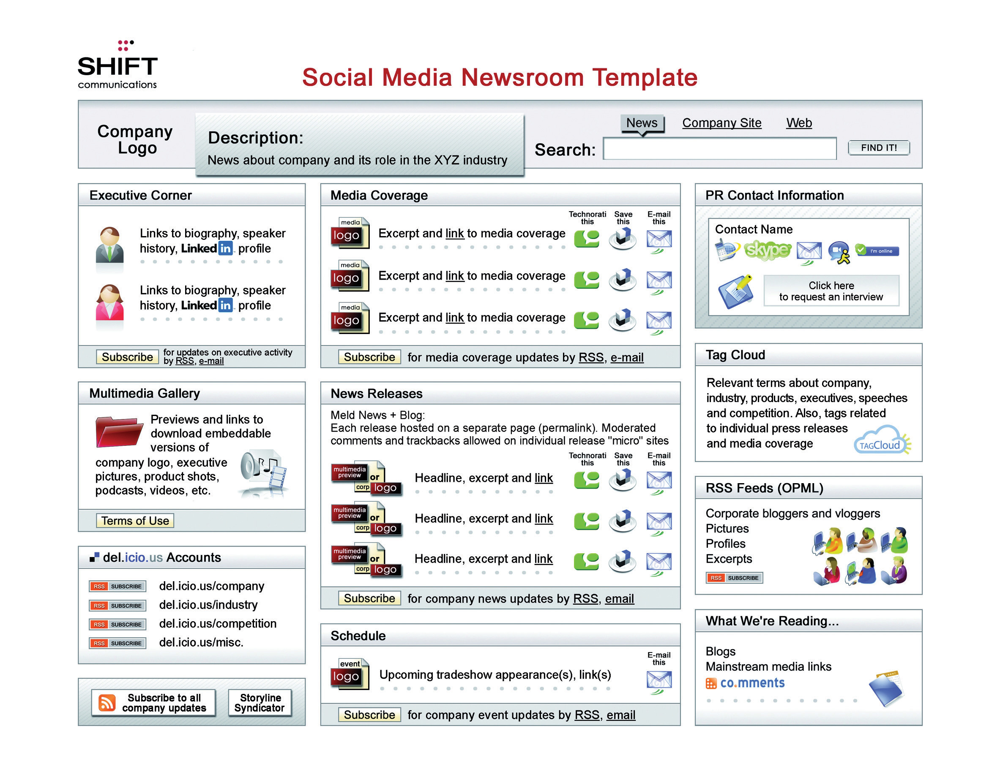

Public Relations is a set of management, supervisory, and technical functions that foster an organization’s ability to strategically listen to, appreciate, and respond to those persons whose mutually beneficial relationships with the organization are necessary if it is to achieve its missions and values.
Robert Heath, Encyclopedia of Public Relations
Traditional PR (public relations) has focused on crafted press releases and company image. It has provided a controlled release of information and a communication process that relies on journalists and traditional media such as newspapers. This modus operandi has been enormously impacted by the spread and influence of the Internet.
While the Internet provides excellent tools to the PR industry, the shift in communications afforded by the Internet has also caused a ruckus in the world of public relations. Information is freely available and accessible to a far greater audience, as opposed to being controlled through a select group of journalists. Communication is taking place in the realm where the consumer feels most comfortable, as opposed to the channels dictated by the company.
PR needs to follow this shift, especially as consumers are increasingly turning to a “person like me” for trusted advice, as opposed to mainstream media outlets.“‘A Person Like Me’ Now Most Credible Spokesperson for Companies,” press release, Edelman, January 23, 2006, http://www.edelman.com/news/showone.asp?id=102 (accessed May 28, 2008).
In 2009, Google introduced Google Social Search, which finds relevant public content from your friends and contacts and highlights it for you at the bottom of your search results. This further illustrates how consumers will be shifting their trust from traditional media.
The Internet provides savvy PR professionals with plenty of tools for listening to and engaging with a far wider community and can have immense benefits for companies that are willing to be transparent in their communications. It also allows companies to engage in a more immediate form of communication.
Web public relations (WebPR) collectively stands for the ways in which you can get your message out online. It is used to connect with customers and enhance brand awareness, exposure, and SEO (search engine optimization) efforts using various online channels like article directories, press release sites, industry related sites, online newsrooms, blogs, forums, and social media.
In a connected, digital world, PR isn’t just about the press release; it’s about connecting with customers.
Heidi CohenHeidi Cohen, “More Than a Press Release: Extending Your Online PR Efforts,” ClickZ, March 30, 2006, http://www.clickz.com/showPage.html?page=3594951 (accessed May 28, 2008).
As new communication tools became available with the developments of the Internet, so they became available to the PR industry. It also revealed a wider audience for a company’s stories and developed new channels for promoting them. With the rise of social media, and especially the growing influence of bloggers, it became clear that PR officers needed to reach out to more than just journalists.
However, the road has been rocky, and traditional PR has in some instances struggled to cope with the new rules of engagement.
In February 2006, Tom Foremski wrote in his post “Die! Press Release! Die! Die! Die!”: “I’ve been telling the PR industry for some time now that things cannot go along as they are…business as usual while mainstream media goes to hell in a hand basket.”Tom Foremski, “Die! Press Release! Die! Die! Die!” Silicon Valley Watcher, February 27, 2006, http://www.siliconvalleywatcher.com/mt/archives/2006/02/ die_press_relea.php (accessed May 28, 2008).
Chris Anderson, editor in chief of Wired and author of The Long Tail, announced on his blog in October 2007 that he was blocking “lazy flacks [who] send press releases to the Editor in Chief of Wired because they can’t be bothered to find out who on my staff, if anyone, might actually be interested in what they’re pitching.”Chris Anderson, “Sorry PR People: You're Blocked,” The Long Tail, October 29, 2007, http://www.longtail.com/the_long_tail/2007/10/sorry-pr-people.html (accessed May 11, 2010).
However, a 2005 experiment showed that press releases can garner a better ROI (return on investment) than a PPC (pay-per-click) campaign.Sean Carton, “How Is Information Passed Around the Web?” ClickZ, October 3, 2005, http://www.clickz.com/showPage.html?page=3552876 (accessed May 28, 2008). So it’s worth ensuring you know how to be an effective practitioner in today’s connected environment in order to do the following:
The most important component of successful public relations (PR) is listening to your customers. They are telling you not only what they want but also how well your message is being received. In Chapter 11 "Online Reputation Management", the tools used to listen online were discussed.
If PR is about connecting with your customers, it should also be about responding to them by engaging them in conversation in the channels where that conversation is taking place.
WebPR allows you to build your own voice. Though you cannot control the message, you should lead the conversation through transparent communications.
Online reputation management (ORM)Ensuring that you know what is being said about you online and that you are leading the conversation surrounding your person, company, or brand. will enable a company to listen to what is being said about it online. Particularly important is to regularly monitor all channels that a customer might use to contact or talk about a company. This includes forums and consumer action Web sites, as well as personal blogs.
Not only does this allow a trend in general sentiment related to the company to emerge, but it will also highlight issues that need attention and areas that are being orchestrated successfully.
ORM described the tools that can be used to find out what is being said about a company online. A key function of WebPR is to respond to those conversations with a consistent voice. Consumer-generated media can and must be responded to. Being publicly available, and publicly searchable, means that consumer-generated media (CGM) form part of the public perception of a company. As discussed in Chapter 11 "Online Reputation Management", search results often show CGM—messages that a company cannot control.
Blogs and forums are key starting points for responding. Responding in these mediums ensures that the company’s response may be viewed along with the original message—making the response more personal and thus credible in the eyes of the consumer.
Transparency and honesty are vital. Any semblance of “PR speak” or “spin” could see this worthy outreach backfiring and creating even more negative hype. An authentic voice works best, as does a thick skin. Respond to the good and the bad—it shows that the company is listening to all conversations.
Whether or not a company has a Web site, it most likely has a Web presence. Not only are businesses listed in online directories, but they are also mentioned in CGM. However, companies need to pay attention to the voice that is portrayed by their online presence and use the tools of the Internet to enhance that voice and meet strategic business objectives.
Establishing long-term, trusting consumer relationships through online article syndications, press releasesAlso called a news release, this is an electronic or paper document issued to the media with the intention of gaining news coverage. It follows established layout guidelines., and blogs aids a company to craft online credibility, placing it in a better position to respond to future criticism and receive future praise. These tools also help build links to a company’s Web site. And, of course, links increase traffic and have search engine optimization (SEO)Making sure that you are achieving optimal rankings by the search engines. benefits that can ultimately lead to conversion, sales, and an increased readership.
Social media, ORM, and WebPR are all intertwined—have you noticed? It’s all about conversations, how to listen to the chatter, and how to get involved in it as well.
While it used to be that messages were dispersed to journalists who would then broadcast them to a reading public, today that practice does not always exist to disseminate the information being transmitted. This provides tremendous opportunity for companies to be fully involved in engaging with their customers.
WebPR is not about throwing out the PR rule book. It’s about using the Internet to fully realize its communication potential.
WebPR is best used for:
Online article syndication is one of WebPR’s (Web public relations) principal and most successful tactics. It involves writing articles that are in no way a direct promotion of your site. These are not press releases; they are written to provide information and valuable content. Articles are submitted to online article directories, where they are picked up and republished on other sites.
As the articles contain a link and keywords relevant to your site, product offerings, or services, the benefits for search engine optimization (SEO) are excellent. But the strategy won’t work unless people want your articles. Thus, they need to be broad, informative, and not just thinly disguised advertisements. Each article will also have an “About the Author” section. This could contain up to three links to your site, and many article directories will allow you to include a backlinkA link at another site leading to your site and also called an incoming link. These are seen as indications of popularity by search engines. in the body of the article as well.
The article gets republished on many Web and blog sites in the weeks after it is published. In order to ensure your site remains the search engine authority on the article’s subject, the article should be published and indexed there first. Online article syndication not only allows you to introduce fresh, optimized content to your site but also enables you to generate valuable SEO backlinks.
Articles containing relevant information are value adding and therefore attract links naturally. And, if published on a third-party site, they should carry a link back to your own Web site. This drives visitors to the site that are automatically predisposed to your brand and are therefore more likely to engage and buy the products you offer.
By looking at your Web site’s content themes, and the key phrasesA word or words that a Web site optimizes for. Also used to refer to words that are used by users of search engines. associated with them, you will be able to write targeted, key-phrase-rich articles. Listening to the conversations around your brand, and seeing what customers are saying, can also lead you to topics relevant to your Web site and your customers. Refer to your SEO strategy, and the keywords you are targeting, to create articles that complement your SEO efforts.
A WebPR article should aim to be the following:
Using SEO and Web copy guidelines, ensure that the content is optimized for search engines, as well as engaging for readers. Publish the article to your own Web site first to establish the authority of your Web site. This will do the following:
First, the article needs to be optimized for your Web site. Implement all the tactics covered in Chapter 14 "Online Copywriting", such as metadata that adheres to search engine standards, optimized title and key phrases, optimal use of <h> tags, and links. Once it is live, you will need to wait for it to be indexed by the search engines: if you type the article title into the search engine and it returns the page with your article on it as a result, it has been indexed and it’s now ready to be submitted to the online article syndication sites and directories.
The article then needs to be edited for syndicating. Different directories have their own requirements and guidelines that need to be adhered to.
For example, some directories require that all links to your Web site in the body of the text, bar one, would need to be removed, as well as all mentions of your company as a brand name. You will also need to create an “About the Author” section at the end of the article. This can tell readers more about your company and the information they can access by visiting the site. You will be able to add two or three links in this section, depending on the directory. Send one link to the home page and the other(s) to pages within the site.
If these guidelines aren’t met, your articles will not be published and you may be flagged as writing irrelevant content and, in the worst case, be blocked from any further submissions.
Most directories allow the inclusion of keywords relevant to the article. Ensure these are relevant to the article and that you include the key phrases for which you have optimized the article. These key phrases will allow readers to find your article, using the search function on the directories. This is also called tagging your article.
Many directories also allow a description. This description will be displayed, along with the title of the article, when someone has searched the directory for a key phrase or category for which you have tagged your article. The description should entice the user to read your article, so it needs to be succinct and gripping. It also needs to inform the readers what the article is about and how they will benefit from reading it.
Once you have done this, you will then need to convert the article into HTML. The HTML is very basic, and while the different directories have their own HTML guidelines that you will need to familiarize yourself with, the standard tags are as follows.
For each directory, the submission guidelines will indicate requirements for the text.
Publishing the articles to directories means they can be picked up and republished on other sites, which contributes significantly to link-building efforts. There are hundreds of online article directories out there, but you need to be selective when choosing which ones to submit to. The good article directories usually allow up to four links to be placed in each article.
Here is a list of ten directories that you could publish your articles to:
These directories all allow three to four links, they all give statistics on how the articles are doing, and they all allow you to preview the article before you publish it—it is important to be able to preview it to ensure that no mistakes were made during the HTML conversion process.
All the previous article directories are free, though you will need to register for an account.
Once you have submitted the article, it will undergo a review process—the directories do this to ensure that the articles are actually useful and relevant rather than simply advertorials. It will then be approved and available to read on the site. From here people who are interested in republishing the article on their own sites or blogs can do so as long as they reproduce the content exactly as you have submitted it. If the article is well written and informative, it has the capacity to go viral, which is the ultimate goal as the more times it is republished the more links you will acquire—and all at no cost to you.
A bit of basic online reputation monitoring will enable you to keep an eye on where your article is being republished and ensure that it is being republished correctly. There’s no use in sites republishing it if they’re going to strip out all the links and the “About the Author” section that you included, as this is ultimately the driving force for business opportunities.
The press release is a stalwart of public relations (PR). It is a standardized format for releasing information. Originally intended to provide information to journalists, press releases are increasingly being read without going through the journalists first. PR has also realized the tremendous impact of bloggers, and many PR professionals are using the same press releases in their communications with bloggers. Today, with many offline press offices moving online, journalists are also bloggers, and bloggers are the new citizen journalists, so the lines are becoming even further blurred.
Newswires, like article directories, allow for online submission of press releases. In turn, these are syndicatedMaking content available for distribution among selected clients. via RSS (really simple syndication)An easy way of syndicating content and aggregating content. RSS allows for users to access the information on a Web site via a direct feed without all the extra useless information., and so are picked up by the news engines, such as Google News, Yahoo! News, and MSN News. Many people pick up their news via these online news engines, which aggregate news from a number of publications and newswires, and so the press release is becoming an ever more crucial means of reaching a growing audience.
As well as promoting conversation around your company and its products, online press releases should drive traffic to your site. To achieve this, press releases need to be optimized to contain related key phrases and links. Not only is this important for the press releases being picked up by news engines, but there are many journalists who will simply reproduce the copy of a well-written press release. Ensure that these reproductions positively impact your SEO (search engine optimization) efforts by optimizing your press releases for key phrases and links.
Don’t forget to publish your press releases on your own site before sending them to the release sites. You’ll want to be considered as the “expert” in the search engine’s eyes on the subject, and journalists also need to be able to find all the information they need on a company Web site.
Journalists usually extract information from a press release and supply commentary when they write an article. How do you think the fact that the press releases are now being read directly by the public affects the press release?
Like articles, you will need to write a description and allocate keywords to the press release. You will need to ensure that all media contact information is listed, usually in the boilerplateStandard wording about an organization that usually appears at the foot of a press release. Similar to the “About the Author” section of a syndicated online article. or in the “About the Author” section. Each site will specify exactly what information is required. Very few of the press release sites allow you to convert your releases into HTML (especially the free-release sites). Apart from the keywords, the category you select for your press release is extremely important, so be sure to have a good look at the categories the site offers and make sure that you select the most appropriate one.
Most of the sites offer a free option and a paid option. The paid option provides a host of additional benefits, and it is worth considering paying for a membership to one of them.
The benefits of online press releases are numerous and include the following:
Here are some press release sites to consider:
Blogs and other consumer-generated media (CGM)Another word for social media or content produced by end users as opposed to businesses. are sometimes referred to as citizen journalism. The reach and influence of CGM means that press releases are often finding their way to the in-boxes of content creators. While many journalists are becoming disillusioned with the standard press release format, the press release can be seen as overhyped corporate speak by time-starved and transparency-focused bloggers.
Figure 12.1 Template for a Social Media News Release

Pitching to bloggers can be a sensitive task, and there are some guidelines outlined in this chapter, but PR firms such as Edelman and Shift Communications have created templates for a social media press release (SMPR) designed to communicate facts more clearly and concisely and to use the tools provided by social mediaMedia that are published, created, and shared by individuals on the Internet, such as blogs, images, video, and more..
This is the outcome of an evolving conversation among PR companies, journalists, and bloggers. It is a work in progress, and there is plenty being said both for and against this approach, but it is an elegant example of PR firms listening to the conversation, engaging, and responding.
Go to http://www.edelman.com/news for some examples of the Edelman version of the SMPR in action.
Writing a blog is one of the best ways for a company to build its own voice in the new world of social media and citizen journalism. Not only do blogs play a role in SEO (with fresh content written with key phrases in mind), they also play a strategically important role in reaching out to customers and connecting with them.
Blogging takes a company right into the heart of the conversation and demonstrates the company’s comfort with this direct communication channel. A blog means that there is regular commentary that is spoken in the voice of the company. Additionally, blogging teaches companies how to engage personally with their customers.
As the Internet increases the ease of access to information, an essential part of WebPR (Web public relations) is ensuring that pertinent information is easy to access. Making sure that journalists, customers, and investors are able to find all key company information quickly and easily means that you are able to slip into that conversation as a key contributor that much more easily.
A 2003 Nielsen Norman study found that when journalists used a corporate Web site to find basic information, they were successful only 73 percent of the time.Jakob Nielsen, “PR on Web Sites: Increasing Usability,” Jakob Nielsen’s Alertbox, March 10, 2003, http://www.useit.com/alertbox/pr-2nd-study.html (accessed May 28, 2008). Journalists often work on tight deadlines, and having the required information on hand could make the difference between whether a company is written about or not. An online press roomA part of a Web site aimed at providing journalists with pertinent corporate information, such as PR contacts, images, and press releases. can ensure a company is able to meet journalists’ needs.
An online press room must have the following:
Figure 12.2 Social Media Newsroom Template
Keeping the information accessible and accurate saves time for both the PR team and for the researcher and shows an openness to communication.
Although many journalists are bloggers, bloggers are not all journalists. They do not have to answer to their editor or publisher. They generally do not write to pay their bills; they tend to write about things that they are passionate about. They measure success in number of comments, trackbacksA mechanism used in a blog that shows a list of entries in other blogs that refer to a post on the first blog., and traffic.
To pitch effectively to bloggers, you need to understand these subtleties. There are many useful blog posts by bloggers who get pitched too often that offer guidelines for the PR industry. The effective PR hack will take note.
As with journalists, building a relationship is the best way to pitch to a blogger. Remember, journalist or blogger, you are reaching out to an individual. To build a relationship, try the following:
In the United States, the beauty PR industry has been noticing the power of bloggers, and some of the cosmetics houses send samples and swag (an industry term for gifts) to bloggers as well as journalists.Kayleen Schaefer, “Beauty Blogs Come of Age: Swag, Please!” New York Times, January 31, 2008, http://www.nytimes.com/2008/01/31/fashion/31SKIN.html?ei=5088&en= 9e67baddbc42c4a5&ex=1359435600&partner=rssnyt&emc=rss&pagewanted=all (accessed May 28, 2008). There is a difference, however. Journalists are generally restricted in the value of the gift they are allowed to accept and tend to reveal when reviewed products are free samples. The publishing houses need to maintain an unbiased reputation. Bloggers, however, are self-publishers and can make up their own rules as they go along. Some of them accept lavish gifts in return for coverage—coverage that can appear more authentic (even if it isn’t) as it comes from a blogger and not a journalist.
WebPR is about engaging in a conversation, so the essential tools that are required are the following:
RSS feeds tracking mentions of pertinent keywords are the best way to get an overview of mentions of a brand or company. These are outlined in detail in Chapter 11 "Online Reputation Management".
Responding can take place through the various social media channels such as blogs, Twitter, and forums.
Online article directories and press-release directories are also crucial to publishing and spreading information. Having a thorough and up-to-date online newsroom ensures that relevant information is available.
The most important tool is relationship building. Whether with journalists, bloggers, or consumers, transparent conversations pave the way for effective public relations.
There is no question about it: the media landscape has changed, and those who need to broadcast messages in the new media need to adapt along with it.
The Internet allows for greater distribution and reach of all messages, but that means that companies can no longer control these messages in the ways that they used to. Public relations on the Web allows companies increased access to what their customers are saying and a direct channel to respond to that.
Having so many new recipients of information requires more work from the PR team. As well as building relationships with journalists, you also need to include bloggers and other generators of content. The rules of engagement are changing, and power is increasingly moving from the companies who create messages to those that they need to broadcast it for them.
Writing articles for online syndication both provides useful information to potential customers and enhances SEO (search engine optimization) efforts. Quirk, the digital agency for Pilkington Self-Cleaning Glass (http://www.pilkingtonselfcleaningglass.co.uk), has been writing articles based on key phrases that are being promoted on the Web site.
Once a key phrase (e.g., “self-cleaning glass,” “conservatory glass”) has been selected, research then reveals what information consumers are searching for. An informative article is then written, which is usually two pages in length around the selected key phrase.
The article is then submitted to eight online article-syndication sites. As each article contains three links and is submitted to eight directories, twenty-four links are garnered as soon as the article is published.
Articles containing valuable content tend to attract links naturally and are republished on other sites. Over the last two years, twenty articles have been written and published for Pilkington Self-Cleaning Glass. Each has been republished approximately ten times: That’s approximately 54 new links pointing toward the Web site from just one article. And that’s about 1,080 links overall.
The following article was written in January 2006 and was published to 8 directory sites from which it garnered 24 links and 5,050 reads. What’s more, it was republished on a wide array of sources: 339 sites were indexed for it on a Google Search, which is a maximum of 1,017 quality links.
By Sarah Manners
Acclaimed architect Bruno Taut said, “If we want our culture to rise to a higher level, we are obligated for better or for worse, to change our architecture. And this only becomes possible if we take away the closed character from the rooms in which we live. We can only do that by introducing glass architecture, which lets in the light of the sun, the moon, and the stars.”
A New Architectural Era
Built in Hyde Park, London to house the Great Exhibition in 1851 the Crystal Palace is commonly considered as a significant turning point in architectural history. This magnificent structure built from steel and glass paved the way for further exploration of glass as an architectural element. The glass sail of the new Milan trade fair and Louvre pyramid are other stunning examples of the use of glass as a structural as well as a design element. Other examples of glass architecture include the London Bridge, Agbar and Federazija Towers as well as the Tokyo International Forum.
While the use of glass in construction was previously quite limited to grand designs and office buildings it is starting to become a core structural and design element in many homes. Glass facilitates natural light and opens up rooms allowing smaller spaces to look bigger as well as facilitating a natural indoor/outdoor flow, which often enhances the tranquility as well as the value of your home. Glass is also relatively inexpensive and fully recyclable, an important consideration in the current era of heightened environmental consciousness. Glass use in construction has increased dramatically due to the rapid changes in glass production and technology. Previously glass was thought to be quite a fragile building material and many steered away from it because of this. Modern glass, however, is not only spectacular to look through but it is safer, stronger and energy efficient.
Glass in the Home
In the past glass was mainly utilized for windows to allow some air and light in to rooms. Today glass is utilized in the construction of several elements of exterior and interior architecture. Exterior glass architecture includes facades, display windows’ skylights, skywalks, entrances, revolving doors, canopies, winter gardens and conservatories. All of which allow homes to be bathed in natural sunlight with gorgeous outdoor views. Interior glass architecture can be used for staircases, elevated walkways and even as traditional walls. There are some houses in which all the walls are actually glass. Such high quantities of glass previously compromised other aspects such as the heating and cooling requirements. Often glass architecture would incur high heating costs in winter and cooling costs in summer. Fortunately such great progress has been made in the glass industry that we now have access a variety of different kinds of glass each with fantastic benefits. One such example is glass with spectrally selective qualities, which allows light to stream into the house without being harmful or degenerative to occupants and their belongings.
Caring for Your Glass
To keep your glass looking great and streak free you will need to ensure that it is cleaned often. Try a few different cleaning solutions before you decide which one to use, options vary from store bought to homemade solutions. Many use products such as ammonia, vinegar, borax, alcohol or Epsom salts to clean glass. An important point to remember is that when using your own solutions never combine an acid and an alkaline, for example vinegar and ammonia, as they neutralize one another. After washing use a dry cotton towel rather than paper towels or newspaper as they tend to disintegrate and leave deposits on your glass. For a great shine a dry blackboard eraser can be used.
To keep frost from accumulating on exterior windows during the winter, add two cups of antifreeze or rubbing alcohol to each gallon of wash water. For deposits of paint, resin or glue, wet the surface and then scrape them off using a razor blade scraper. Take care to scrape in one direction only in order to avoid scratching the surface.
Another option, and a fantastic one at that, is the breakthrough technology that has brought us self-cleaning glass. An ultra-thin coating is applied to the glass during the manufacturing process; this coating has two highly beneficial effects on the glass. First organic residue on the glass [is] broken down by the ultraviolet wavelengths in sunlight then when it rains the dirt is washed off. As the coating is hydrophilic when rain hits the glass, it doesn’t form droplets and in turn eradicates streaking. Rain water flows down the glass in a sheet and washes the dirt away. If you don’t have time to wait for the rain a simple garden hose will be just as effective. Self-cleaning glass is making the lives of homeowners far easier and is giving home owners absolutely no reason to hesitate to use of glass in the construction of their homes. What could be better than bright, open rooms with excellent outdoor views facilitated by huge sheets of glass, without having to spend your days cleaning them?
Modern day architectural trends have elevated the way we think about the use of glass in our own homes. It is no longer simply a material for windows and the occasional sliding door; it is a design component in its own right. With each passing day glass becomes a more important element in architecture not only in grand public structures but also in the lives and homes of families across the world. The beauty of glass lies in its simplicity, it enables us to be enveloped by nature while living comfortably in doors.
About the Author
Many architects, designers and construction companies recommend Pilkington when it comes to glass. Having been in the glass industry for 179 years, Pilkington is recognized as the world’s technological leader in glass. Out of all of their innovative products, Pilkington Activ™—the world’s first self-cleaning glass is one of their greatest products and is an ideal material in glass architecture.
Darren Rowse, “How to Pitch to Bloggers,” ProBlogger, October 30, 2007, http://www.problogger.net/archives/2007/10/30/how-to-pitch-to-bloggers-21-tips (accessed May 28, 2008).